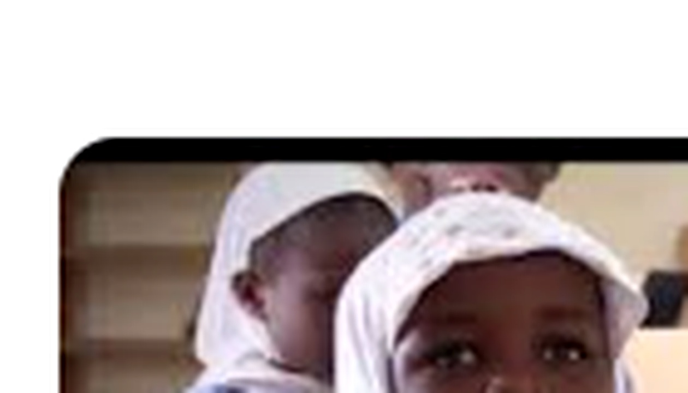

01
Knowledge
Build strong academic foundations.
Our academic environment is designed to develop knowledge, curiosity, critical thinking and confidence.

The AIS journey is designed as a connected progression through Early Years, Nursery, Kindergarten, Primary and Junior High School. Public information shared about the school also highlights Mathematics, English, Integrated Science and ICT among its core academic areas.
Curiosity, confidence and strong foundations should grow together.
Build strong academic foundations.
Ask better questions and explore ideas.
Develop independent judgement and reasoning.
Apply learning with purpose.